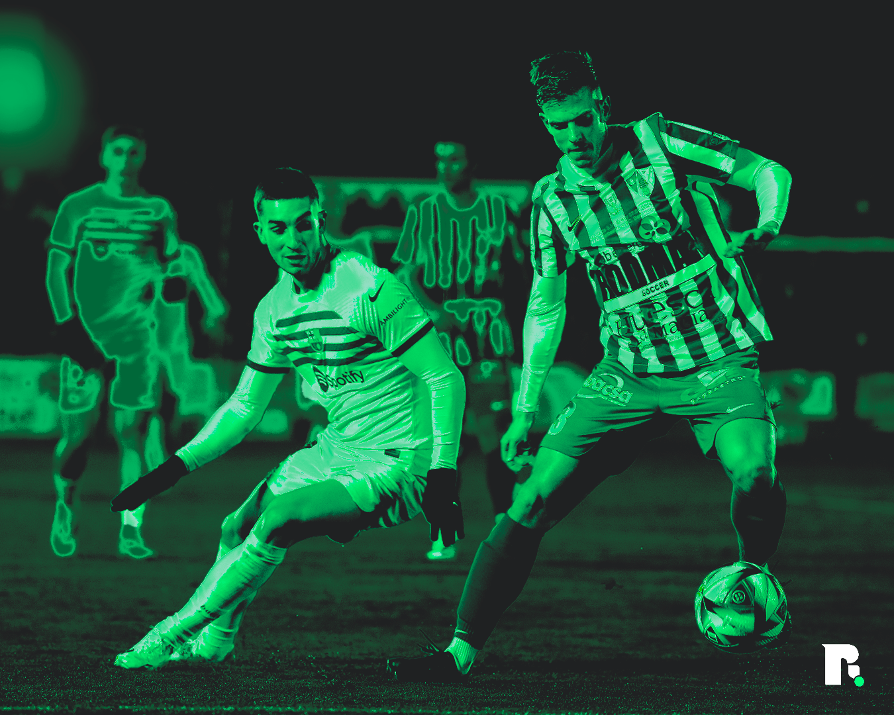
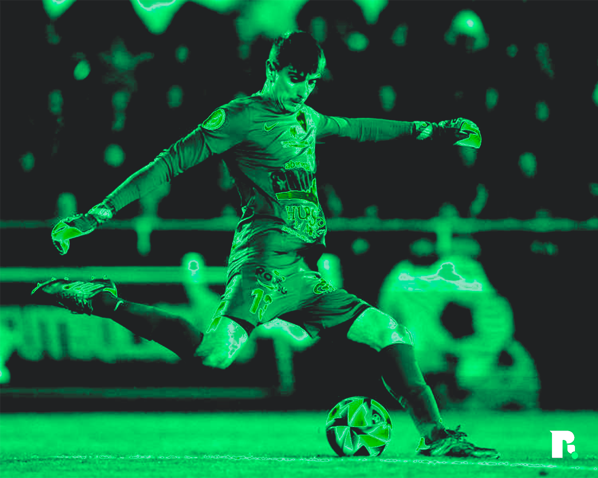

Barbastre busca venjança. Ho han tornat a fer. Per moltes persones els trens passen només una vegada. Per la UD Barbastro, n’ha passat dues, i vaja si ho han aprofitat, han tornat a pujar-s’hi i no en volen baixar. Després de donar la campanada en l’última edició de la Copa del Rei, on la UD Barbastro de Segona Federació va eliminar l’Almeria, un equip de LaLiga, no en van tenir prou, i aquest any han repetit campanada per segona vegada consecutiva eliminant a l’Espanyol. I casualment, el seu rival pels setzens de final torna a ser el mateix. Dos anys seguits ballant amb la més lletja. El Barça, ara de la mà de Flick, visitarà el poble d’Osca, Aragó, amb l’esperança de no retrobar-se amb els fantasmes de la temporada passada, on l’equip aleshores dirigit per Xavi Hernández va suar la cansalada per derrotar a una UD Barbastro que va vendre molt cara la seva pell.
L’equip aragonès, com va succeïr la temporada passada, arriba al partit amb un historial impecable, són un mur infranquejable. En les dues primeres rondes, no han encaixat ni un sol gol. L’Espanyol, tal com va poder comprovar el Barça la temporada passada, es va topar amb un àngel de la guarda vingut des de Llançà que, en els partits grans, es creix i protegeix la porteria local del Campo Municipal de los Deportes com cavaller a la seva amada. Després de recórrer el territori espanyol buscant oportunitats en el món del futbol, la vida torna a posar a Arnau Fàbrega davant del partit de la seva vida, qui sap si ara, amb un resultat diferent.
Nascut l’any 2000 a tocar de França, en un poble de menys de cinc mil habitants de l’Alt Empordà (Llançà), Arnau Fàbrega no ha tingut un camí senzill per arribar fins a on és ara. Després de desenvolupar-se com a futbolista al futbol base de la U.E. Figueres, del Girona, i posteriorment de l’Espanyol, equip amb el qual s’ha retrobat i venjat en aquesta edició copera, l’any 2017 en edat de juvenil va canviar la tramuntana per la calor andalusa, i va començar una nova aventura a Granada. Al conjunt granadí, va arribar a acumular fins a 4 partits amb el filial, i es va guanyar el lloc en els desplaçaments europeus del club quan aquest estava disputant la Europa League. Aquest premi de voltar per Europa es va convertir en malson quan el dia que podia cumplir el seu somni de debutar a la màxima categoria del futbol espanyol contra la Reial Societat els positius per COVID al seu equip el van deixar confinat veient des d’un hotel com un altre porter aprofitava l'oportunitat que li corresponia. Després d’aquest disgust, va marxar cedit un any al CD Huétor Vega de tercera divisió, per posteriorment viatjar fora de la Península, a les Illes Canàries, al filial de Las Palmas. Després d’una temporada discreta on només va disputar 10 partits i l’equip no va salvar la categoria, Fàbrega va abandonar el clima tropical per tornar 5 anys després al país que l’havia vist créixer, arribant a la Garrotxa per firmar per l’Olot. Al conjunt olotí es va repartir els minuts a la porteria, i fa dos temporades va decidir tornar a canviar de club i va viatjar fins a Osca per fitxar per la U.D. Barbastro. Malgrat no comptar amb els minuts desitjats en la competició domèstica, Arnau Fàbrega s’ha fet un nom en el territori espanyol gràcies a les seves grans actuacions a la Copa del Rei, eliminant a Almeria i Espanyol, i posant contra les cordes al Barça, sent el sostén del seu equip en molts d’aquests partits. Ara, contra el Barça, vol seguir ampliant aquesta història.
És la segona vegada en dos anys que es veurà les cares contra els blaugranes. El primer cop, amb un regust agredolç després de competir els 90 minuts i quedar-se a un sol gol de forçar una pròrroga. Malgrat encaixar tres gols, el de Llançà va realitzar un gran partit amb diverses aturades de molt mèrit que van fer somiar amb el miracle a tot Barbastre. Ara, el que té clar Fàbrega, com ha dit a Sport i Onda Cero, és que es “gaudirà com l’any passat” i “serà una experiència única per repetir la gesta de l’any passat”. La U.D. Barbastro espera haver-se portat més bé aquest any, i rebre el regal de reis que la temporada passada no va poder rebre, per així, convertir el somni en realitat i eliminar al Barça de la Copa.